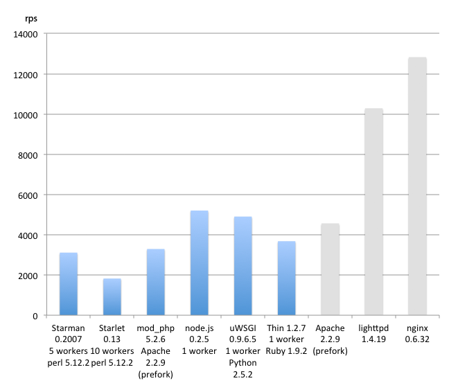
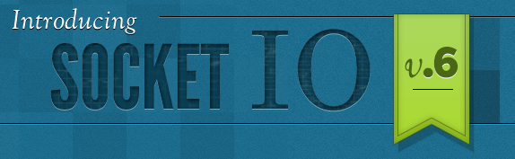
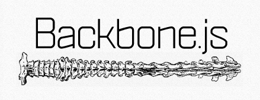

-
node.js
飯塚直
-
node.jsとは？
- サーバサイドJavaScript
- Google ChromeのV8 JavaScriptエンジン搭載
- UNIXライクなOS上で動作
- 作者はJoyent社のRyan Dahl氏
-
良いところ
- 高速に動作
- メモリ効率が良い
- 学習コストが低い
- コンパクトに書ける
- イベント駆動、非同期処理が基本
- スケーラブルなネットワークプログラムを作りやすい
- 楽しい
-
悪いところ
- 標準ライブラリが少ない（現状では）
- まだ成熟していない（大きな仕様変更等あり）
-
Webサーバ - Hello World
var http = require('http');
http.createServer(function (request, response) {
response.writeHead(200, {'Content-Type': 'text/plain'});
response.end('Hello World\n');
}).listen(3000);
console.log('Server running at http://127.0.0.1:3000/');
-
パフォーマンス計測
テスト条件
- Debian GNU/Linux 5.0.6
- Intel Core 2 Duo T7700 2.40GHz
- 512MB RAM
- 最も単純なHelloWorldを作成
- ab -n10000 -c20 http://localhost/hello
選手
- Starman (Plack - Perl)
- Starlet (Plack - Perl)
- mod_php
- node.js
- uWSGI (WSGI - Python)
- Thin (Rack - Ruby)
すべて設定はデフォルト
-

-
インストール
MacでHomebrewを使用している場合
$ brew install node
-
パッケージマネージャ
PerlのCPAN、PHPのPEAR/PECLに相当
パッケージのインストール
$ npm install express
パッケージの使用
var express = require('express');
-
非同期処理が基本
setTimeoutやXMLHttpRequestで使うクロージャ／コールバック
setTimeout(function() {
alert('1秒経ちました');
}, 1000);
-
ファイル読み込み
var fs = require('fs');
fs.readFile('/etc/passwd', 'utf8', function(err, data) {
// ファイル読み込みが終わったらここに来る
if (err) throw err;
console.log(data);
});
// 同期処理用の関数も存在するが、あまり推奨されない
var content = fs.readFileSync('/etc/passwd', 'utf8');
console.log(content);
-
ファイル書き込み
var fs = require('fs');
fs.writeFile('out.txt', "Hello Node\n", function(err) {
// ファイル書き込みが終わったらここに来る
if (err) throw err;
console.log('saved!');
});
-
ファイル変更監視
var fs = require('fs');
fs.watchFile('message.txt', function(curr, prev) {
console.log('更新時刻: ' + curr.mtime);
console.log('前回更新時刻: ' + prev.mtime);
});
-
DB操作ライブラリ
- MySQL
- PostgreSQL
- SQLite
- memcached
- Tokyo Cabinet / Tokyo Tyrant
- MongoDB
- CouchDB
- redis
- HBase
- HandlerSocket
-
数多くのライブラリ
XML, DNS, XMPP, SMTP, IMAP, gzip, msgpack
GD, ImageMagick, GraphViz, MapServer
Dropbox, Twitter, Facebook, Flickr, Last.fm, Bit.ly, GitHub
Google Maps, Gearman, beanstalkd
pub/sub, sendmail, Growl, Amazon Web Services (S3/EC2), Solr, PDF, SHOUTcast/Icecast
すべてのライブラリが非同期処理を基本として作られている
- https://github.com/ry/node/wiki/modules
- $ npm list
-
Twitter Streaming API
var TwitterNode = require('twitter-node').TwitterNode
var twit = new TwitterNode({
user: 'username',
password: 'password',
});
twit
// 捕捉するキーワード
.track('music')
// エラー時のコールバック
.addListener('error', function(error){
console.log(error.message)
})
// ツイート新着時のコールバック
.addListener('tweet', function(tweet) {
console.log('@' + tweet.user.screen_name
+ ': ' + tweet.text);
})
.stream();
-
-
express
SinatraライクなWebサーバ
var express = require('express')
var app = express.createServer();
app.get('/', function(req, res) {
res.send('Hello World\n');
});
app.get('/rand/:max', function(req, res) {
var max = parseInt(req.params.max);
var rand = Math.floor(Math.random() * (max + 1));
res.send('random: ' + rand + '\n');
});
app.listen(3000);
-
Socket.io

-
Socket.io
ぼくらのWebSocket
リアルタイムアプリの開発に便利
WebSocket, Flash, Cometなどを自動判別して使用
- Internet Explorer 5.5 - 8
- Safari 3 - 5
- Google Chrome 4 - 6
- Firefox 3 - 4
- Opera 10.61
- iPhone Safari
- iPad Safari
- Android WebKit
- Palm webOS WebKit
-
Socket.io
クライアントサイド
<script src="http://localhost:8124/socket.io/socket.io.js"></script>
<script>
var socket = new io.Socket('localhost', {port: 8124});
socket.on('connect', function() {
console.log('connected');
});
socket.on('message', function(data) {
// サーバからメッセージ到着
console.dir(data);
});
socket.on('disconnect', function() {
console.dir('disconnected');
});
socket.connect();
// サーバにメッセージ送信
socket.send('hello');
</script>
-
Socket.io
サーバサイド
var http = require('http')
, io = require('socket.io')
var server = http.createServer();
server.listen(8124);
var socket = io.listen(server);
socket.on('connection', function(client) {
// 新しく接続したクライアントにメッセージを送信
client.send('welcome!');
client.on('message', function(data) {
// クライアントからメッセージが来た
})
client.on('disconnect', function() {
// クライアントが接続を切った
})
});
// 接続中の全クライアントに配信
socket.broadcast('how are you?');
-
チャット
簡単に作れる
http://172.16.1.1:8124/
-
マルチプレイヤーのゲーム
あまり難しい事を考えずに作れる
http://172.16.1.1:8125/
ルール
移動: hjkl または wasd または 矢印キー
セルが重なるときに:
- 自分が動いて相手のセルに乗っかると勝ち
- 相手が動いて自分のセルに乗っかると負け
負けると自分のセル(薄緑色)が消える
ページリロードで再スタート
-
クライアントサイドで使える
ナイスなライブラリ

-
Backbone.js
モデル、カスタムイベント、コレクション、ビューなどの機能
var user1 = new Backbone.Model({
name: 'nao',
email: 'iizuka-nao@kayac.com'
});
// changeイベントにコールバックを登録
user1.bind('change', function(model) {
alert('changed from ' + model.previous('name')
+ ' to ' + model.get('name'));
});
// user1オブジェクトのプロパティを変更
user1.set({ name: 'naomi' });
Run
-
Backbone.js
サーバーサイドのモデルとのCRUD連携
// クラス定義
var User = Backbone.Model.extend({
url: '/users'
});
// インスタンス化
var user1 = new User({
name: 'nao',
email: 'iizuka-nao@kayac.com'
});
// サーバ上に保存
user1.save();
// サーバから更新データを取得
user1.fetch();
-
Underscore.js
JSの配列用関数を拡張するライブラリ
each, map, reduce, select(=grep),
keys, values, flatten
extend, clone, times
chain, tap
etc.
http://documentcloud.github.com/underscore/
node.jsでもほぼ使える
-
forever
daemontoolsに相当
$ npm install forever
$ forever start server.js
$ forever list
[0] server.js [ 28856, 28855 ]
$ forever stop 0
-
ホスティングサービス
- Heroku (実験的)
- no.de (クローズドベータ)
- jsapp.us (wonderflみたいなもの)
-
Node.js Knockout
node.jsを使ったコーディングコンテスト
http://nodeknockout.com (down)
MapRejuice
サイトにアクセスしたブラウザ上でMapReduce
http://maprejuice.com (down)
マルチプレイヤーゲーム
http://lazeroids.com
http://swarmation.com
リアルタイムシステムモニタ
http://monitaur.net
-
ありがとうございました